Alerta ambiental.
Los efectos de las reformas que propone Milei
Más de 100 organizaciones se unieron para frenar los cambios que contempla la ley ómnibus en cuanto a bosques, glaciares y pesca; marcha atrás en algunos puntos y negociaciones de último momento
Es alarmante para varias organizaciones ambientalistas que entre las 664 modificaciones que la ley ómnibus propone, existan varios artículos encaminados a diluir y desregular la legislación que protege la naturaleza. A poco más de un mes de que el nuevo gobierno se ratificara como firmante del Acuerdo de París en Dubai, sembró preocupación en el sector ambientalista. En una carta pública, más de 100 organizaciones catalogaron como “regresiva” la propuesta del oficialismo, pidieron rechazar varios de sus aspectos y reclamaron la conformación de comisiones especializadas para tratar la iniciativa. Buscan hacer llegar su advertencia a los diferentes bloques del Congreso y ya han logrado algunas victorias.
“Parece que queremos quitar al Estado de un rol central que es el control y fiscalización de los temas ambientales, algo que no puede quedar en manos de privados”, planteó a LA NACION Manuel Jaramillo, director ejecutivo de Vida Silvestre, una de las organizaciones firmantes de la carta. Otras entidades convocaron a toda la sociedad civil a firmar una petición para impedir que avancen las reformas.
Originalmente, la ley ómnibus pretendía modificar cuatro normas ambientales: la ley de bosques (26.331), la ley de protección ambiental para control de actividades de quema (26.562), la ley de glaciares (26.639) y la ley federal de pesca (24.922). Además, el paquete incluye un capítulo de “transición energética”, con el objetivo de sentar bases mínimas para desarrollar mercados de carbono en el país. Pero, poco después de su publicación y de que diferentes grupos de gobernadores, diputados y activistas hicieran pública su disconformidad, el ala dialoguista del oficialismo prometió cambios.
Tanto el ministro del Interior, Guillermo Francos, como la subsecretaria de Ambiente, Ana Lamas, reconocieron la semana pasada que hubo desaciertos. “Fue un error de interpretación, evidentemente el equipo encargado de redactar el documento se equivocó en algunos puntos”, admitió Lamas en diálogo con LA NACION. Habrá marcha atrás en algunos aspectos vinculados con pesca, bosques nativos y control de quemas, según declaraciones de ambos funcionarios.
El resto de los artículos permanecen intactos, y se espera que se discutan durante las sesiones extraordinarias que terminarían el 31 de enero. En las últimas horas, una comisión que representa a las organizaciones ambientalistas se reunió con Lamas para plantear su postura y buscar consensos. Allí, las entidades reiteraron su preocupación y propusieron postergar el tratamiento de los temas ambientales fuera del paquete de la ley ómnibus, en sesiones ordinarias.
Según las organizaciones, no solo existen riesgos ambientales que pueden afectar a mediano y largo plazo al país, sino que también se pueden debilitar diversos acuerdos internacionales de los que la Argentina forma parte.
“Todas las reformas violan el principio de no regresión del Acuerdo de Escazú [abocado al acceso a la justicia en asuntos ambientales]. Además, hay varios puntos que son contradictorios con la propia ley general del ambiente”, denuncia José Esain, abogado de Aves Argentinas, y asegura que estas reformas podrían afectar la visión que el mundo tiene de la Argentina en materia ambiental y de derechos humanos.
Y esta imagen no es menor para el Gobierno: los mercados internacionales pretenden cada vez más consideraciones de protección ambiental, justicia y responsabilidad climática. "Si vas dejando de lado estos mercados exigentes que están vinculados al primer mundo, se van a quedar con los que menos busca el Presidente", opinó Hernán Casañas, director ejecutivo de Aves Argentinas.Esto es algo que no se le escapa a la subsecretaria de Ambiente. “No se vio cuando se escribió la ley, pero puede impedir muchas exportaciones como las de cuero, ganado y pesca”, reconoció.
A pesar de este desconcertante comienzo, Lamas afirmó en la Cámara de Diputados que buscará consensos sobre los puntos más polémicos en materia ambiental. Sin embargo, para las organizaciones es necesario asegurarse de que su voz sea escuchada, lo que significa profundizar el debate. Una manera de hacerlo es dimensionar qué pasaría en nuestro país si se avanza con el espíritu del proyecto de Milei.
Bosques
Alerta por desmontes e incendios fuera de control
En el mundo, los bosques siguen haciéndose cada vez más chicos y tanto América Latina como la Argentina han cobrado protagonismo en las últimas décadas por las importantes pérdidas que han sufrido.
Según el monitor internacional Global Forest Watch, desde 2001 hasta el 2020 desaparecieron 6,6 millones de hectáreas de bosque en el país, una extensión casi tan grande como la provincia de Entre Ríos. La organización Vida Silvestre indica además que la mayor parte han sido bosques nativos perdidos a causa de la expansión agrícola y ganadera.
Perder extensiones forestales puede ocasionar varios problemas. Dentro de un bosque sano, el suelo es suave y funciona como una especie de esponja. Cuando llueve, el agua no pasa de largo sino que se infiltra. Esto hace que ríos que están montaña abajo puedan nutrirse de agua limpia, que las regiones cercanas a los bosques se conserven con más frescura, que la tierra suelta no se levante y que la biodiversidad se mantenga estable. Conforme se degradan, este circuito deja de funcionar.
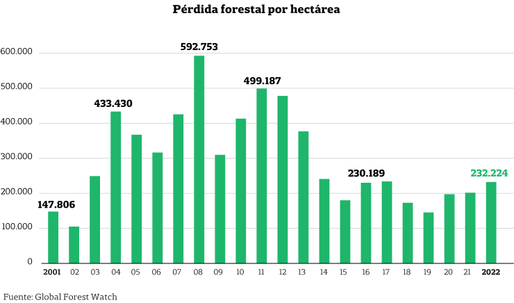"Los bosques fungen como grandes contenedores de la lluvia y todos estos procesos de deforestación podrían generar graves problemas en las cuencas bajas de muchísimos ríos", describió Casañas. Es más: según su mirada y la del resto de los representantes de las organizaciones, incluso con la ley de bosques nativos vigente, las extensiones forestales en la Argentina son vulnerables porque nunca se aplicó completamente. Si avanzan las modificaciones redactadas en el proyecto oficialista sobre bosques y quemas, la situación podría ser mucho peor.
De la ley de bosques nativos, el Ejecutivo pretendía modificar dos aspectos que varios especialistas consultados por LA NACION consideran “el corazón de la norma”. Primero, buscaba hacer cambios para permitir actividades humanas en zonas de bosques con categorías amarilla y roja -con los permisos ambientales correspondientes- y en zonas verdes sin necesidad de permiso. En los dos primeros casos, se trata de sitios estrictamente protegidos con un valor natural altísimo y que comprenden alrededor del 80% de los bosques nativos. La zona verde, si bien admite actividades humanas, requiere de una evaluación de impacto ambiental.
Según señaló Lamas a LA NACION, se revisarán algunas de estas modificaciones ya que “ponen en riesgo importantes financiamientos internacionales e intercambios comerciales como el europeo”. Un escenario posible es que las zonas amarillas y las rojas sigan protegidas, y las verdes queden desreguladas.
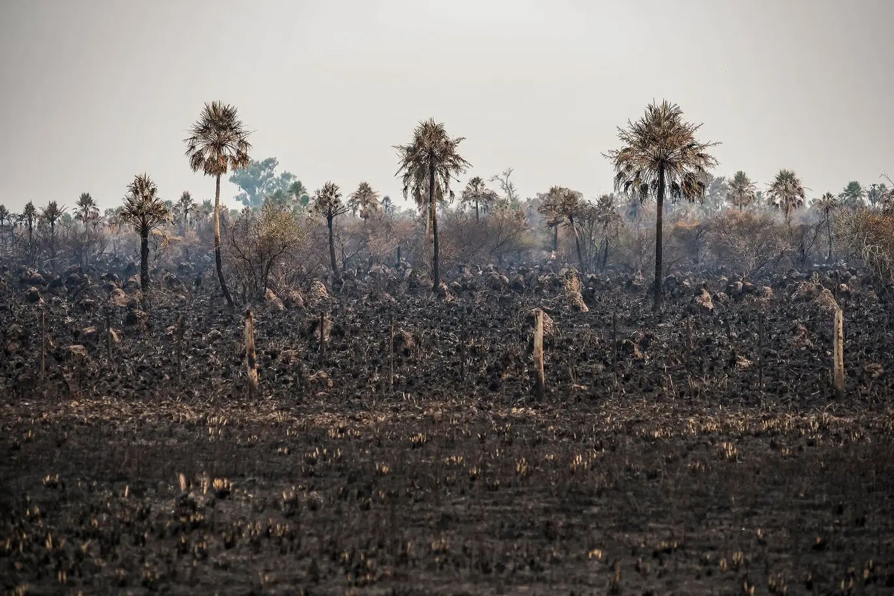 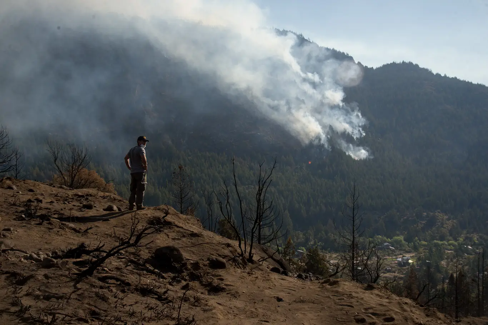 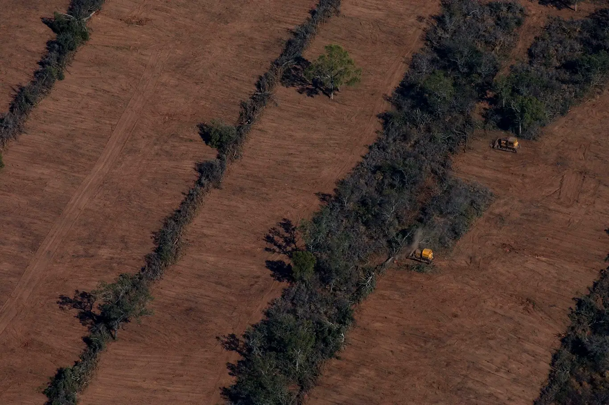 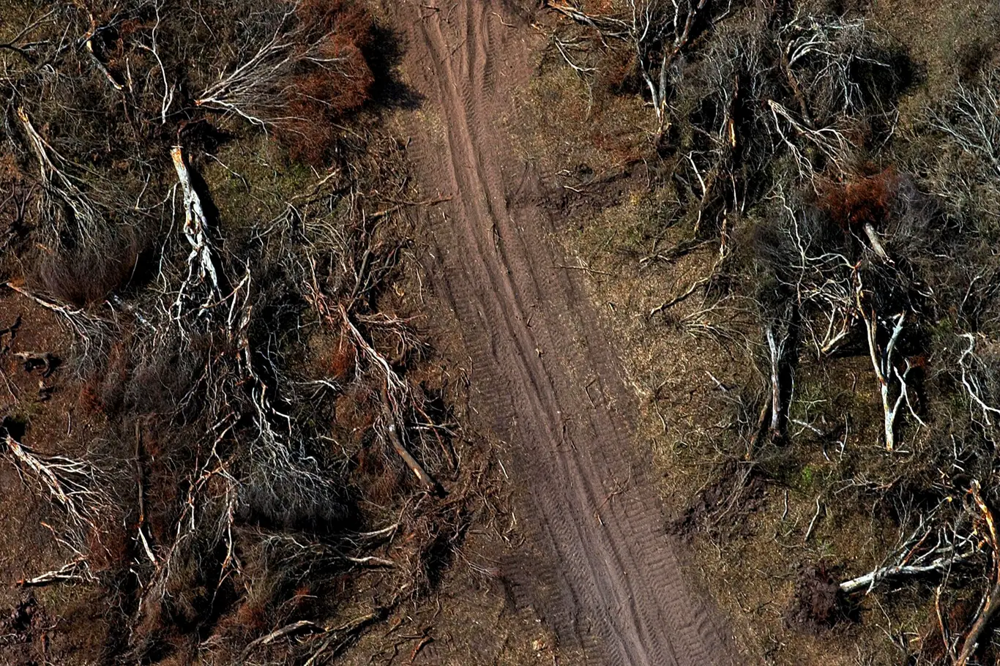Otorgar más flexibilidad a la quema equivale a permitir que proliferen los incendios forestales sin control, afirman los expertos
Pero hay otra situación que también preocupa al sector ambientalista y tiene que ver con el financiamiento a la protección de bosques. En términos simples, lo que el Ejecutivo busca eliminar es el piso presupuestario reglamentado que la ley recibe a través del Fondo Nacional para el Enriquecimiento y la Conservación de los Bosques Nativos. En lugar de eso, pretende que se decida el monto para la protección de bosques en el presupuesto nacional.
“Si consideramos que desde hace más de 15 años este fondo ha recibido entre un 3 y un 15% del financiamiento establecido, el cambio propuesto viene a empeorar todo. Ahora ni siquiera habrá una obligación mínima”, alerta Jaramillo.
Lamas confirmó que este punto se mantendrá en el texto final, pero se mostró confiada en herramientas como el financiamiento externo y supone una voluntad de cooperación desde el Gobierno. “Entiendo que si hay un piso todos se sienten más tranquilos, pero esto es algo que va a mantenerse. Seguramente el Poder Ejecutivo Nacional va a proponer los mismos porcentajes”, indicó.
Sin embargo, Jaramillo teme un desfinanciamiento aún mayor al que ya existe y, aunque el presupuesto público es una de todas las fuentes de dinero, considera que una reducción drástica volvería casi inoperante a la ley.
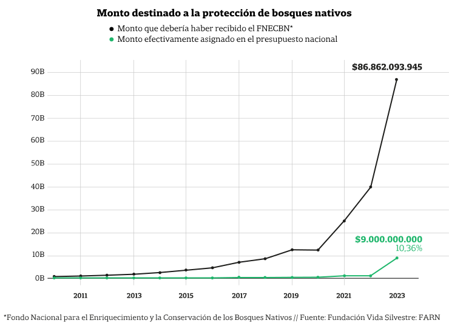Respecto a la ley de control de quemas, que es la que regula los incendios provocados en el país, aparecen dos modificaciones. Uno de los aspectos fundamentales que dicta la norma es que para realizar una quema se debe pedir un permiso y cumplir varios requisitos como justificar para qué, dónde y cómo se haría. El nuevo proyecto no contempla en su marco prohibitivo las llamadas quemas dedicadas a la “protección medioambiental del terreno”. En esos casos no habría necesidad de permiso. Además, habilita la posibilidad de obtener permisos tácitos para hacer quemas si es que la provincia -encargada de dar dichos permisos- no resuelve ese trámite antes de los 30 días.
Para Andrés Nápoli, director ejecutivo de la Fundación Ambiente y Recursos Naturales (FARN), dar más flexibilidad a la quema es permitir que proliferen los incendios. En el país, el 95% de los incendios son provocados y los controles suelen ser laxos, por eso el experto imagina un escenario alarmante si avanza la iniciativa. “Quemar un bosque tiene menos pena que romper un vidrio. Estas reformas vienen a reforzar un problema que ya existe. Mirá lo que pasó en Brasil durante el gobierno de Jair Bolsonaro, allí también se flexibilizaron los controles y proliferó la quema indiscriminada”, argumentó Nápoli.
Lamas afirmó que se pueden revisar algunos puntos. Admitió que “30 días es muy poco” para que venza el plazo del trámite del permiso. “Buscaríamos sacar también la palabra tácito. No obstante, la gente que necesita hacer quemas tampoco puede esperar por siempre a recibir una aprobación”, sostuvo.
Glaciares
El agua, ¿en riesgo?
El ambiente glacial no solo se compone de esas majestuosas columnas blancas que deslumbran en la Cordillera de los Andes. Existen también otro tipo de cuerpos de hielo, menos vistosos, más pequeños y mezclados con rocas o cubiertos completamente por tierra, que conforman lo que los científicos llaman el ambiente periglacial y, en conjunto con los grandes glaciares, funcionan como una reserva fundamental de agua para los animales, las plantas y alrededor de siete millones de habitantes en la Argentina.
La ley de glaciares vigente contempla la protección de todas estas zonas y prohíbe las actividades económicas sobre ellas. Se consideran todos los tipos de cuerpos de hielo y las zonas en las que se encuentran. Pero con las reformas planteadas por el Ejecutivo habría algunas que quedarían desamparadas.
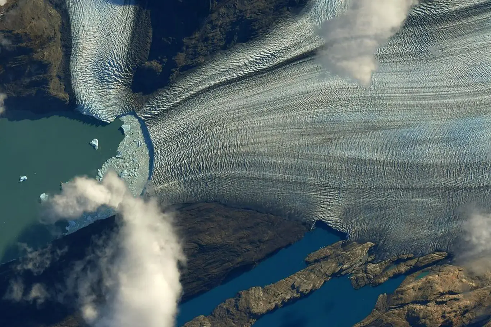 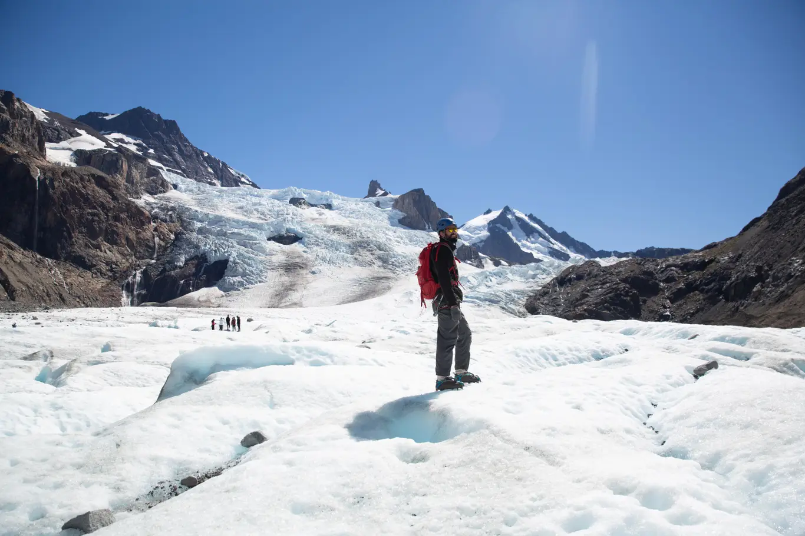 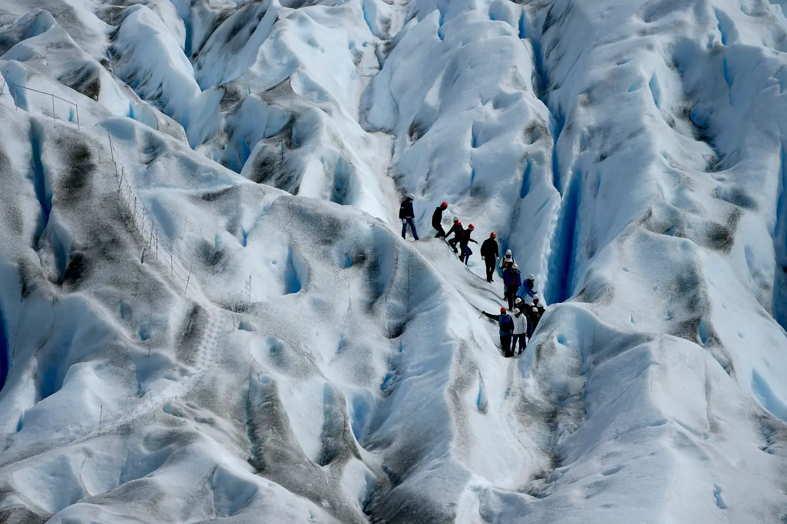 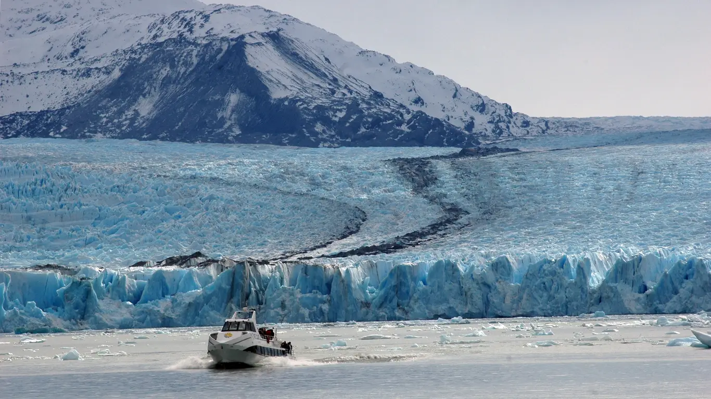Los grandes glaciares son los más atractivos y conocidos, sin embargo, los cuerpos de hielo mezclados con rocas o cubiertos por tierra son fundamentales para el ecosistema glacial
“Lo que hacen estos cambios es reducir el área a proteger. No solo elimina una parte del ambiente periglacial, sino que deja a criterio de las provincias lo que se puede proteger y lo que no”, explicó Lucas Ruiz, geólogo e investigador del Instituto Argentino de Nivología, Glaciología y Ciencias Ambientales (Ianigla).
Lo que el proyecto de ley busca modificar son dos artículos que determinan qué tipo de masa de hielo es apta para ser protegida. Dentro de los nuevos requisitos, se estipula que deben estar incluidos aquellos glaciares que por más de dos años se mantengan en estado sólido, que midan una hectárea o más y que tengan una función hídrica importante. Todo esto debe ser evaluado por las provincias y sus leyes. De considerar que no cumplen estos requisitos, la provincia sería libre de abrir la puerta a diferentes industrias.
El argumento de Ruiz y de otros especialistas es que los requisitos son relativos al método, al lugar y al momento en el que se evalúa el ambiente periglacial. “Estos sitios son grandes reservorios de agua que nutren a los ríos más o menos dependiendo del año. Cuando hay muchas lluvias y nevadas, un glaciar puede aportar solo un 10% del agua de un río, pero cuando hay sequías, esa cifra puede elevarse hasta un 60%. Así que dependiendo del año, la importancia hídrica puede cambiar, pero también el tamaño de los hielos y la extensión”, añadió.
Una de las regiones más vulnerables al cambio climático es la glacial. Ianigla explica que los glaciares retroceden a pasos agigantados por el aumento de temperaturas y de las sequías. Según calcula el instituto, cada año se pierde una cantidad de hielo que equivale al agua para abastecer a toda la población argentina por un año y medio.
Durante su intervención en la Cámara baja, Lamas aseguró que ningúna zona glacial o periglacial activa sería afectada y que la única que podría quedar sin protección -según el criterio provincial- sería la llamada zona inactiva.
Para las organizaciones ambientalistas, estas modificaciones dan respuesta a un reclamo histórico de la industria minera, que desde la sanción de la ley de glaciares, hace casi 14 años, ha presionado en busca de mayores permisos. Para ellos, el avance de esa industria hacia los glaciares pone en riesgo el agua, que en la zona andina es un recurso en fuerte disputa.
Pesca
Los efectos de una flexibilización de los controles
Si bien las modificaciones al régimen federal pesquero fueron las primeras en las que se dio marcha atrás entre las desregulaciones consignadas en la ley ómnibus, las organizaciones ambientalistas vieron con mucha preocupación que se hayan planteado.
Los cambios que se habían propuesto promovían mayor centralidad en la toma de decisiones del Poder Ejecutivo Nacional, reduciendo la participación de provincias, lo que fue leído como un golpe a los beneficios que tenían los trabajadores argentinos sobre los extranjeros, al dar mayor apertura internacional a la actividad. Contemplaba la flexibilización de los requisitos legales para el otorgamiento de permisos de pesca y diluía la obligatoriedad del desembarco de los productos pesqueros en puertos argentinos.
El último punto fue uno de los que más alarmó al sector ambientalista. El hecho de que las embarcaciones no llegaran a ningún puerto nacional hubiera significado la desaparición de una de las formas centrales de control, fiscalización y trazabilidad de la pesca en el país, sostienen las entidades.
“La pesca en la Argentina dista mucho de ser un modelo ejemplar, sin embargo, desregular el control aún deficiente que existe, solo empeoraría las cosas”, dispara Milko Schvartzman, especialista en conservación marina del Círculo de Políticas Ambientales, en diálogo con LA NACION.
Para Schvartzman, el monitoreo de los barcos ya es complicado, especialmente del otro lado de la milla 200, fuera de la zona económica exclusiva. Allí no se sabe con certeza cuánto se pesca en realidad. “De dar más apertura a las empresas extranjeras que nos superan en número de flotas, sumado a el debilitamiento en el control por el tema de los puertos, no me sorprendería que proliferara la pesca ilegal más que ahora. Esto sumado a que quieren dejar de considerar los antecedentes de las embarcaciones a la hora de dar permisos de pesca”, señaló Schvartzman.
Embarcaciones extranjeras incumplen los reglamentos y desactivan dispositivos de seguimiento, apagan sus luces o pescan en zonas prohibidas
Según un reporte de Oceana de 2021, el 95% de la actividad pesquera visible que se dio en aguas nacionales lejanas fue por parte de flotas extranjeras, especialmente chinas, coreanas, españolas y taiwanesas. Muchas de ellas rompían los reglamentos nacionales como desactivar dispositivos de seguimiento (GPS), apagar sus luces o pescar en zonas prohibidas. Las imágenes de barcos poteros (aquellos que usan potas o señuelos diseñados especialmente para atraer calamares) en aguas argentinas refleja la gravedad del problema.
Según identifica el experto, estrategias sobran para evitar inspecciones como el traspaso de cargas de pesca a buques en altamar o viajar a sitios con controles laxos como Montevideo, que fue catalogado, también por Oceana, como un puerto con vigilancia débil.

Por presión de gobernadores de provincias con costa marítima, empresarios de la pesca, organizaciones ambientalistas y sindicatos, se lograron retrotraer los puntos más delicados de la reforma. Sin embargo, aún no hay certeza de si alguno de los cambios propuestos llegará al texto final.
Transición energética
Créditos de carbono para las empresas
Dentro de la ley ómnibus solo una propuesta fue desarrollada bajo el capítulo de transición energética: la implementación de un mercado de derechos de emisión. Este es un tipo de estrategia vinculada con el comercio para reducir emisiones en diferentes sectores productivos e implica que las empresas puedan comerciar con dióxido de carbono, el gas señalado como el principal motor de la crisis climática.
El principio de estos sistemas parte de un tope de emisiones que cada sector productivo tendría. Según la propuesta,el mismo Ejecutivo sería el encargado de determinar cuál es el límite para cada industria y para cada empresa bajo un criterio que aún no es claro.
Una vez establecido el máximo, las empresas deberían reorganizar sus estructuras productivas para evitar superarlo. Si lo logran, obtendrían créditos de carbono, equivalente a una tonelada de CO2. Cuanto menos emitan gases de efecto invernadero, más créditos acumularían.
En sentido contrario, si las empresas superan los topes establecidos, serían sujetos a penalidades -también determinadas por el Ejecutivo- y podrían comprar créditos a empresas más sustentables.
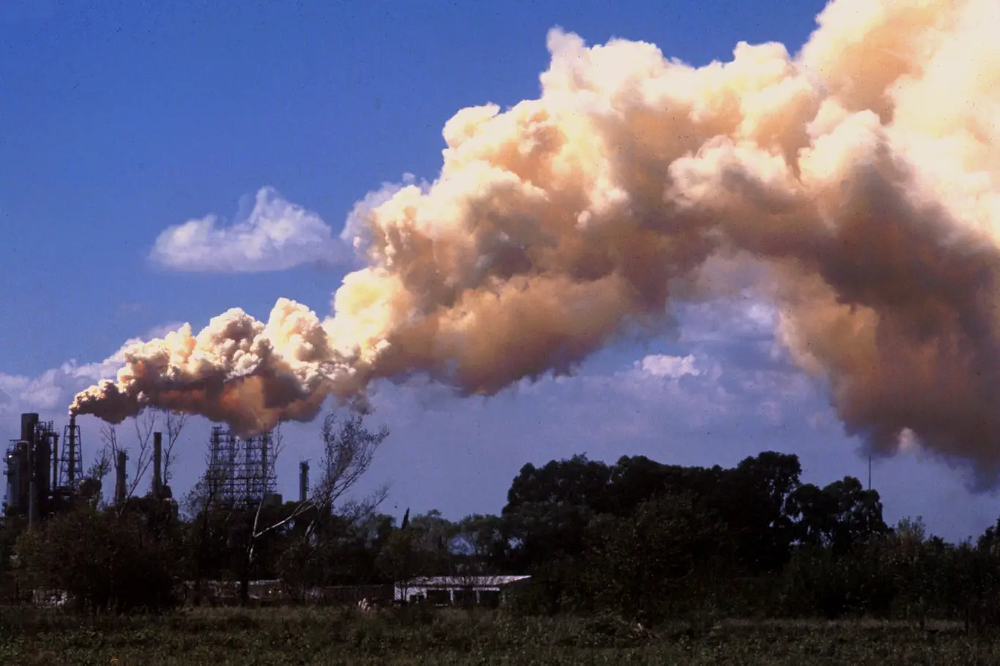

Para las organizaciones ambientalistas, es un riesgo que el Poder Ejecutivo determine los límites de emisiones y las eventuales penalidades
En teoría, la estrategia es excelente. Incluso, Naciones Unidas recomienda sistemas como este para promover la mitigación del CO2 en la atmósfera y son varios los países que adoptaron esta modalidad. “Sin embargo, la regulación de los mercados de carbono es muy pobre a nivel global”, advirtió Casañas. En muchos casos, según los especialistas, empresas o países han falsificado números o generado maniobras para beneficiarse con estos créditos.
Las organizaciones ambientalistas consideran que esta estrategia tendría que ser la última en implementarse y que hay otras que el Gobierno debería desarrollar. También ven con preocupación que el Poder Ejecutivo pretenda centralizar tanto las designaciones de límites como el tipo de penalidades, temen que haya intereses sectoriales que nublen su criterio.
La carta de las asociaciones ambientalistas
Fuente: https://www.lanacion.com.ar/sociedad/ley-omnibus-los-efectos-a-mediano-plazo-de-las-reformas-ambientales-y-los-riesgos-que-quedaron-nid16012024/#/
Autor: Matías Avramow